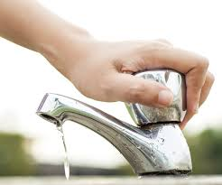
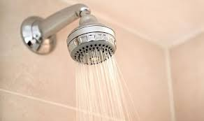
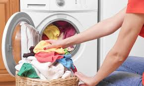

Our top tips on how to save water

1. Turn off the taps
Don't let your water consumption run out of control. Save 6 litres of water a minute by turning off your tap while you brush your teeth.

2. Shower with less
Every minute you spend in a power shower uses up to 17 litres of water. Keep your showers short, sweet and water-saving.

3. Save up your dirty clothes
Washing a full machine load of clothes uses less water and energy than 2 half-loads. This means lower bills and saving water.

4. Call for a new law
We can each do our small bit to save water at home, but we need to be able to hold polluters accountable for damaging our rivers, lakes, and seas.
In 2023, sewage was poured into the UK's waterways 1,000 times a day.
Friends of the Earth is calling for a new law that would force polluters to clean up their act: the Right to a Healthy Environment.